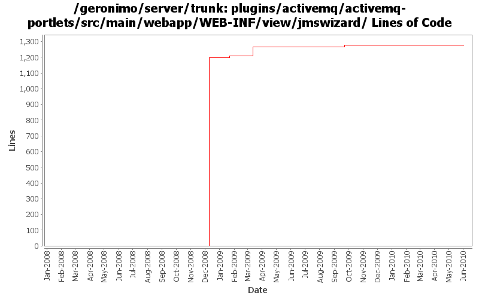

[root]/plugins/activemq/activemq-portlets/src/main/webapp/WEB-INF/view/jmswizard

| Author | Changes | Lines of Code | Lines per Change |
|---|---|---|---|
| Totals | 74 (100.0%) | 1507 (100.0%) | 20.3 |
| dwoods | 44 (59.5%) | 1423 (94.4%) | 32.3 |
| xuhaihong | 10 (13.5%) | 82 (5.4%) | 8.2 |
| rwonly | 1 (1.4%) | 1 (0.1%) | 1.0 |
| jbohn | 1 (1.4%) | 1 (0.1%) | 1.0 |
| djencks | 18 (24.3%) | 0 (0.0%) | 0.0 |
GERONIMO-5167 "ERROR [JNDIReferenceFactory] null" when I deploy new JMS Resource Group for Active MQ(Patch from Ben)
1 lines of code changed in 1 file:
GERONIMO-4891 Null destination error when browsing a new created jms resource group.
11 lines of code changed in 2 files:
Disable the function of view history topic messages due to recent change of ActiveMQ
1 lines of code changed in 1 file:
GERONIMO-4625 JMS statistics does not work correctly while the server url is of vm protocol
7 lines of code changed in 2 files:
GERONIMO-4625 JMS statistics does not work correctly while the server url is of vm protocol
First step change, at least the portlet could display correctly even if the broker name could not be detected.
3 lines of code changed in 1 file:
GERONIMO-4517 Apply unified message display style(G-4484) to javascript alert messages. Together with the localization of these messages. Thanks for the patch, Gang Yin
60 lines of code changed in 4 files:
GERONIMO-4550 No error message displays in console when fail to create jms resource. Patch from Gang Yin.
2 lines of code changed in 1 file:
part 4 of more cleanup of old forms (see Rev738104 for part 3)
1 lines of code changed in 1 file:
GERONIMO-4475 Improve JMS portlet for Borker configuration. Applied 4 patches from Ivan.
87 lines of code changed in 1 file:
GERONIMO-4474 Pull out the text in the JSP files to resource bundle files. Applied jsp-localization-tomcat6-connector.patch, jsp-localization-securityrealm.patch and jsp-localization-activemq-ra.patch from Gang Yin.
2 lines of code changed in 2 files:
GERONIMO-4474 Pull out the text in the JSP files to resource bundle files. Patches provided by Gang Yin.
3 lines of code changed in 3 files:
GERONIMO-4337 rename AMQ5 modules to old names that apps expect
1224 lines of code changed in 9 files:
GERONIMO-4337 rename AMQ5 modules to old names that apps expect
0 lines of code changed in 9 files:
GERONIMO-4337 remove old AMQ4 based modules
27 lines of code changed in 9 files:
GERONIMO-4081 Accessibility issues. Applied GERONIMO-4081-activemq.patch from Ivan.
27 lines of code changed in 7 files:
GERONIMO-4025 Accessibility issues. Applied GERONIMO-4025-activemq-and-monitoring.patch from Rex.
13 lines of code changed in 1 file:
GERONIMO-3983 Update JMS Resource portlet to show the Destination statistics. Thanks Anish for the patch.
12 lines of code changed in 1 file:
GERONIMO-3819 Update JMS Resources Portlet. Patch from Anish Pathadan.
26 lines of code changed in 1 file:
GERONIMO-1775 apply 2nd patch. Console-testsuite passes for me and I didn't see any problems
0 lines of code changed in 18 files: